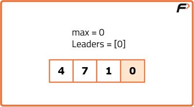
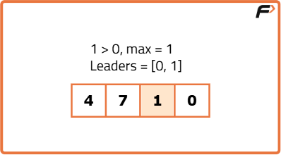
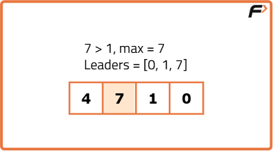
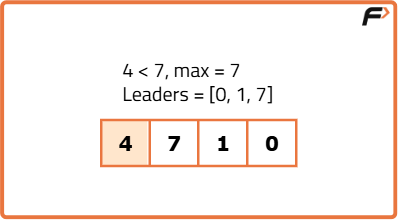

Leaders in an Array
Problem Statement: .
Examples
Example 1: Input: arr = [4, 7, 1, 0] Output: 7 1 0 Explanation: The rightmost element (0) is always a leader. 7 and 1 are greater than the elements to their right, making them leaders as well. Example 2: Input: arr = [10, 22, 12, 3, 0, 6] Output: 22 12 6 Explanation: 6 is a leader because there are no elements after it. 12 is greater than all the elements to its right (3, 0, 6), and 22 is greater than 12, 3, 0, 6, making them leaders as well.
Disclaimer: Here is the practice link to help you assess your knowledge better. It's highly recommend trying to solve it before looking at the solution.
Brute Force
Algorithm
- In this brute force approach, we start by checking all the elements from the start of the array to the end to determine if an element is greater than all the elements to its right (i.e., the leader).
- We use nested loops for this:
- The outer loop checks each element in the array to see if it is a leader.
- The inner loop checks if there is any element to the right that is greater than the element being currently processed by the outer loop.
- Begin by initializing the outer loop pointer at the start element and set it as the current leader.
- If any element traversed is found to be greater than the current leader, the element is not considered a leader, and the outer loop pointer is incremented by 1, setting the next element as the current leader.
- If no other element to the right is greater than the current element, it is added to the answer array as a leader element.
Code
#include<bits/stdc++.h>
using namespace std;
class Solution {
public:
//Function to find leaders in an array.
vector<int> leaders(vector<int>& nums) {
vector<int> ans;
// Iterate through each element in nums
for (int i = 0; i < nums.size(); i++) {
bool leader = true;
/* Check whether nums[i] is greater
than all elements to its right*/
for (int j = i + 1; j < nums.size(); j++) {
if (nums[j] >= nums[i]) {
/* If any element to the right is greater
or equal, nums[i] is not a leader*/
leader = false;
break;
}
}
// If nums[i] is a leader, add it to the ans vector
if (leader) {
ans.push_back(nums[i]);
}
}
//Return the leaders
return ans;
}
};
int main() {
vector<int> nums = {1, 2, 5, 3, 1, 2};
// Create an instance of the Solution class
Solution finder;
// Get leaders using class method
vector<int> ans = finder.leaders(nums);
cout << "Leaders in the array are: ";
for (int i = 0; i < ans.size(); i++) {
cout << ans[i] << " ";
}
cout << endl;
return 0;
}Complexity Analysis
Time Complexity: O(N2), where N is the size of the input array. This is because we have a nested loop where the outer loop runs N times and the inner loop runs up to N times in the worst case.
Space Complexity: O(1), as we are using only a constant amount of extra space for the answer array, which does not depend on the input size.
Optimal Approach
Algorithm
- Set a variable
maxto the last element of the array (nums[sizeOfArray - 1]), as the last element is always a leader. - Create an empty list
ansto store the leader elements, and initially add the last element of the array to this list, as it is always a leader. - Start from the second last element (index =
sizeOfArray - 2) and move towards the first element (index = 0). - For each element, compare it with the
maxvariable. If the current element is greater thanmax, add this element to theanslist and updatemaxto the current element. - After processing all elements, the
anslist will contain all the leader elements in reverse order. Reverse theanslist and return it.




Code
#include<bits/stdc++.h>
using namespace std;
class Solution {
public:
//Function to find the leaders in an array.
vector<int> leaders(vector<int>& nums) {
vector<int> ans;
if(nums.empty()) {
return ans;
}
// Last element of the vector is always a leader
int max = nums[nums.size() - 1];
ans.push_back(nums[nums.size() - 1]);
// Check elements from right to left
for (int i = nums.size() - 2; i >= 0; i--) {
if (nums[i] > max) {
ans.push_back(nums[i]);
max = nums[i];
}
}
/* Reverse the vector to match
the required output order*/
reverse(ans.begin(), ans.end());
//Return the leaders
return ans;
}
};
int main() {
vector<int> nums = {10, 22, 12, 3, 0, 6};
// Create an instance of the Solution class
Solution finder;
// Get leaders using class method
vector<int> ans = finder.leaders(nums);
cout << "Leaders in the array are: ";
for (int i = 0; i < ans.size(); i++) {
cout << ans[i] << " ";
}
cout << endl;
return 0;
}Complexity Analysis
Time Complexity: O(N), where N is the size of the input array. This is because we traverse the array only once.
Space Complexity: O(1), as we are using only a constant amount of extra space.